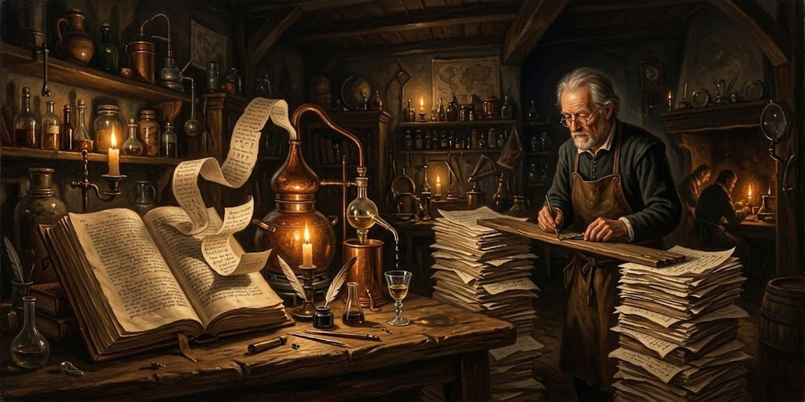

14 de octubre de 2026
El procedimiento de la Destilería

Destilar una obra es quitarle lo que sobra hasta que cabe en la mano y se puede contar. Este cuaderno reúne el procedimiento completo, de la obra entera al destilado, en el orden en que se hace.
1. Partir en frases
La obra se parte en frases. Cada una guarda un identificador y su origen: la escena, el cuento, el capítulo. De un libro de trece cuentos salen unas dos mil. Todo lo que sigue se refiere a las frases por su identificador, y nada se escribe sin poder volver a la frase de donde viene.
2. Medir
Antes de leer se mide, con una regla que no sabe de literatura. Un motor de embeddings lee una frase y devuelve una lista larga de números: su dirección en un mapa de significados. Las frases que hablan de lo mismo caen cerca, aunque no compartan una palabra; las que no tienen relación caen lejos. Cada motor dibuja su propio mapa, y por eso se miden varios.
Con Macbeth (1.108 frases, 28 escenas) se comparó qué motor agrupa mejor por escena. Las diferencias fueron pequeñas y ninguno acertó de sobra, porque la obra misma se deja separar mal. Nemotron, que es gratuito, anduvo más veces adelante; Voyage 4 Large ganó en los dos criterios de vecindad.
Otros criterios acompañan a los vectores, cada uno con su límite:
- Sismograma: el peso de cada palabra como sorpresa dentro de la propia obra, según la idea de Claude Shannon. Mide rareza, no sentido.
- Eco del autor: las frases que el texto retoma y replantea.
- Enlaces estructurales: personajes que coinciden en escena, ecos entre escenas. Es trabajo en buena parte manual.
Rige una regla: afuera del corpus no existe. Las frecuencias se calculan dentro de la obra, y todo modelo declara qué trae de fuera.
3. Mapear
Un mapa se arma de dos maneras. Se capta lo que el mundo ya marcó como famoso, como las 57 líneas de Macbeth. O se construye lo que el corpus muestra de sí mismo, y de ahí sale el mapa mecánico, en tres pasadas:
- PCA deja unos cincuenta ejes y suelta el ruido.
- UMAP baja esos ejes a dos o tres, cuidando que los vecinos sigan siéndolo.
- HDBSCAN marca las zonas densas sin que nadie diga cuántas buscar; las frases sueltas se declaran sueltas.
La nube de cercanía apoya al ojo: cada frase es un punto, y su color dice qué tan cerca está del centro, que es el promedio de toda la obra. Pero manda la lista de cercanía, las frases ordenadas de la más cercana a la más lejana. La cercanía se normaliza por motor: compara frases dentro de un motor, no entre motores. El método actúa sobre zonas de esa lista, no sobre posiciones sueltas.
El mapa enseña dónde mirar y no dicta nada. Una isla es una pista, no una prueba.
4. Elegir los tramos
Sobre el mapa se eligen tramos: frases seguidas, indicadas por identificador, que son texto literal de la obra. Una medida que pretenda predecir qué merece quedarse debe superar controles baratos, como el azar, la longitud, la posición y la rareza. Quien mide, quien destila y quien evalúa no deben ser el mismo, porque si no la prueba es circular.
5. Destilar
Un destilado no es un resumen: es el mismo texto con menos agua, como el demi-glace, que se reduce a fuego lento, decantando y probando. Con Macbeth, unas 18.000 palabras, pedir la mitad de golpe devolvió el 80 %. Repetir el pedido con calma sobre lo ya devuelto dio 58, 43 y 38 %, y allí la máquina se detuvo sola. Cortar poco y repetir llega más lejos que cortar de golpe.
La cata fue una lista de 57 frases famosas: sobrevivieron casi nueve de cada diez con poco más de un tercio del texto. Lo que queda es palabra por palabra del original, en su orden. El pliegue corta y no reescribe.
6. Tender puentes
Entre dos tramos faltan frases, y el lector que llega de cero no debe quedar perdido. El criterio: la prosa de Instinct solo entra donde el original no puede llegar. Tiene tres usos:
- Costura: une dos bloques cuando ninguna frase del texto puede hacer la transición.
- Glosa: da el contexto que el original supone y el invitado no tiene, como quién es un personaje o un nombre propio.
- Marco: abre la pieza y la orienta.
Y una prohibición: nunca se parafrasea lo que el texto ya dice. Si la frase existe, se cita.
La perilla fija cuánta prosa propia admite la pieza:
| Muesca | Qué admite | Tope |
|---|---|---|
| 0 | texto desnudo | ninguna |
| 1 | costura | 10 % |
| 2 | puente y glosa | 25 % |
| 3 | escuela | 50 % |
La medida honesta cuenta como propias solo las palabras que no tienen un original detrás. Una paráfrasis de una frase existente no es voz propia, es el original con otra letra, y debe volver a la suya.
7. Verificar
Con la obra abierta, nunca de memoria. Cada frase citada se busca literal en el original. Cada puente se relee como lo leería un invitado: ¿sabe quién habla, a quién y dónde? Lo confuso señala el lugar. Por último se mide la proporción con la medida honesta y se compara con la muesca elegida.
Límites
Un embedding refleja lo que su modelo aprendió, y otro modelo daría otro mapa parecido, no idéntico. Aplanar pierde información por definición. La medida ayuda a decidir; la lectura sigue siendo de quien lee.
Osmancito, con la asistencia de Instinct